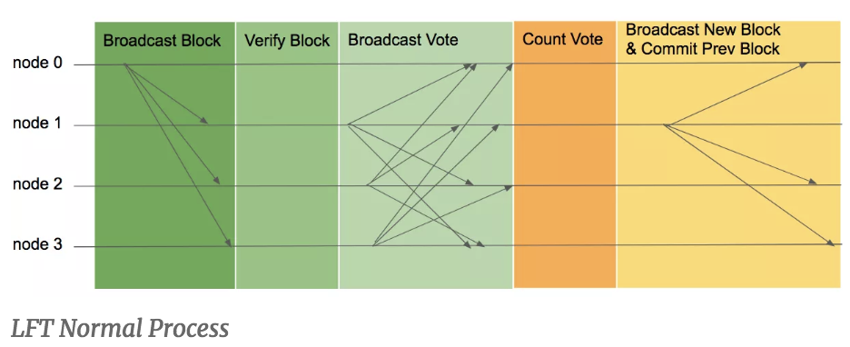

LFT는 현재 loopchain에서 사용하는 합의 알고리즘입니다. 그러나 loopchain은 Pulgin형태로 합의 알고리즘이 구현되어있기 때문에 필요에 따라 PBFT와 같은 다른 합의 알고리즘을 사용할 수 있습니다. 추후에 loopchain은 github를 통해 오픈소스 프로젝트로 공개될 것이기 때문에 직접 다운로드 받고 실행 시킬 수 있습니다.
위 그림은 LFT 알고리즘의 합의 과정에 대한 그림입니다. 네트워크가 시작되면 검증 노드(검증을 통해 합의에 참여하는 노드)들은 사전에 결정되어 있는 리더 노드에게 처리를 원하는 트랜잭션을 전송합니다. 리더 노드는 수집한 트랜잭션을 이용하여 블록을 생성하고 자신의 서명과 함께 다른 모든 검증 노드에게 전송합니다.